Text / Image-to-3D 图文思维导图
先看分类，再点论文名展开：输入与输出 → 中文信息流 → 方法简介 → 原论文框架图。图片可点击查看原始尺寸。
文本／图像是条件；SDS、前馈重建等是机制；Mesh、NeRF、3DGS 是表示。混合方法允许跨类。
本期增补窗口：2026-04-22 至 2026-10-22。近半年标签标识本期深入补充的新论文；延伸阅读标出实际核验深度。首次公开、正式发表与版本更新分别记录。
物体生成
- CLIP 语义监督逐个对象优化
- SDS / VSD扩散教师指导逐实例优化
- NeRF / 网格表示
- DreamFusion
- Magic3D
- ProlificDreamer / VSD
- 3D Gaussian 表示
- DreamGaussian
- GaussianDreamer
- GSGEN
- 多视图扩散先协调不同视角
- 前馈重建 / LRM共享网络预测三维
- 摊销蒸馏把重复求解转入训练
- 原生 3D 生成在三维潜空间采样
- CLAY
- TRELLIS
- TripoSG
- 生成式重建＋Agent 精修
- GATOR
- 观测对齐
- Pixal3D近半年
- 3D Gaussian
- PixGS近半年
- 统一理解生成与编辑
- Hunyuan3D-Buffalo 1.0
- 结构化潜空间与PBR资产
- TRELLIS.2
- 网格自回归逐步生成几何词序列
- 几何与材质分工交叉管线 · 可重新照明
- 部件生成与补全交叉目标 · 可分离部件
- PartGen
- 语义部件
- CubePart近半年
- 原生网格扩散与流2026年近半年机制与接口增补
- 显式拓扑
- LATO.2近半年
- 局部空间控制2026年近半年机制与接口增补
- 局部控制
- SpaceFlow近半年
- 程序与物理资产2026年近半年机制与接口增补
- 单物体任务
- Artisan近半年
场景生成
- 逐视角补全补绘、深度与网格融合
- 语言与程序组合关系规划、程序生成与资产组合
- 多实例联合扩散独立物体与关系共同建模
- 世界生成系统规划、重建、分解与增强
- 布局演化与反馈2026年近半年机制与接口增补
- Agent
- SceneMosaic近半年
人体与 Avatar
- 人体先验＋优化模板提供结构约束
- 单图生成式重建先补背面，再重建
- 人体潜表示生成结构化表示与参数驱动
- 多视图先验与全身资产2026年近半年机制与接口增补
- 人体先验
- TGRHuman近半年
动态 4D
- 多先验蒸馏图像管外观，视频管运动
- 4D-fy
- 时变3D Gaussian
- Align4D近半年
- 规范形状＋形变同一对象随时间变形
- 前馈时序重建视频直接映射到动态三维
- 原生三维时序生成三维潜变量序列扩散
图文联合
- 三维潜空间联合图文直接影响三维潜变量
- 逐对象联合优化图文先验共同给修改信号
- 联合多视图先验先协调图文与不同视角
评测与验证
- 要求满足与验证器2026年近半年机制与接口增补
- 横向评测
- 3DVerifierBench近半年
物体生成 · 论文与框架
生成机制为主线，另列材质、部件、局部控制与程序接口；表示分别标注。Artisan主体是关节物体资产，跨场景程序路线比较。
Dream FieldsCLIP 语义监督
- 输入
- 文本提示
- 输出
- 神经辐射场（NeRF）
先给杯子一组可调的三维参数，再从不同角度渲染图片，用图文编码器判断是否符合描述。相似度经渲染器传回并修改当前对象，稀疏性与背景等正则帮助限制不合理形状。
中文信息流 · 教学简化
- 文字与初始化神经场
- 随机相机渲染
- 图文相似度与正则
- 更新当前三维参数
边界：语义相似并不提供精确几何约束，仍可能得到模糊或连接不合理的结构。
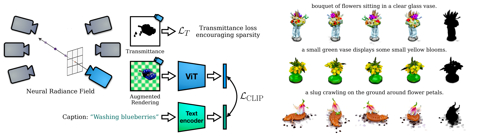
左侧 Figure 1：同一个神经辐射场从随机相机视角渲染，经图像增强后由冻结的 CLIP 图像／文本编码器计算语义对齐损失；梯度经渲染器更新三维参数。上方透射率损失鼓励稀疏，减少空间被不必要的密度填满。右侧 Figure 2：作者展示的多视角生成样例及透射率图，属于结果而非额外训练模块。
DreamFusionSDS / VSD
- 输入
- 文本提示
- 输出
- 带密度、基色的神经辐射场；可导出网格
每轮先渲染当前对象并加入记录过的随机噪声，再让冻结的扩散教师预测噪声。预测与实际噪声之差经渲染链形成参数更新，多轮改变对象；随机相机与光照也参与约束几何。
中文信息流 · 教学简化
- 当前三维对象渲染
- 加噪与冻结教师预测
- 构造SDS残差
- 经渲染链更新三维
边界：二维教师不知道唯一正确的背面，优化仍可能出现多正脸、过饱和和几何歧义。
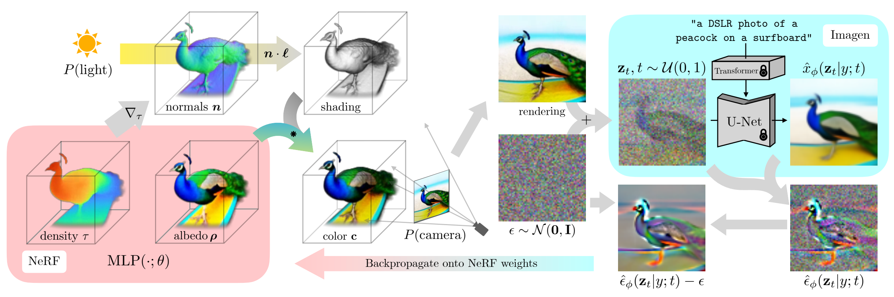
原文PDF第5页Figure 3：相机、光照、NeRF、冻结Imagen及回传路径；原文架构图，不是结果对比。
Magic3DSDS / VSD
- 输入
- 文本提示
- 输出
- 粗阶段神经场 → 纹理网格
先用低分辨率扩散先验优化粗神经场，找到整体形状，再提取网格并用高分辨率先验细化。两个阶段改变了表示、渲染方式和监督分辨率，因此提升不能只归因于一个损失公式。
中文信息流 · 教学简化
- 低分辨率扩散指导
- 粗神经场优化
- 可微提取网格
- 高分辨率网格细化
边界：粗阶段形成的错误可能被细化继承，高分辨率优化也仍需逐对象计算。
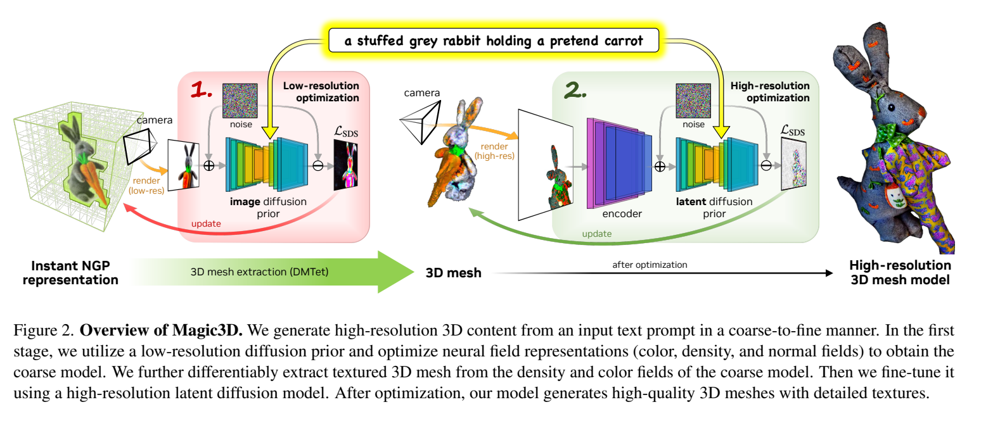
原文Figure 2的粗到细完整管线；先看左侧神经场，再看右侧网格与高分辨率监督。
ProlificDreamer / VSDSDS / VSD
- 输入
- 文本提示；辅助模型还接收相机条件
- 输出
- NeRF / 网格样本及其渲染分布
在冻结教师之外，增加一个用低秩适配训练的辅助模型，让它学习当前对象的渲染分布。两者预测之差用于更新三维参数，另一条训练路径只更新辅助模型；二者交替进行，不能把低秩适配当成直接修改杯子。
中文信息流 · 教学简化
- 当前对象渲染与加噪
- 冻结教师和辅助模型预测
- 预测差经渲染链更新三维
- 当前渲染训练LoRA
- 交替重复两种更新
这里包含两个交替优化回路；第3项更新三维参数，第4项更新LoRA，不能画成LoRA直接生成或修改网格。
边界：辅助模型带来额外训练开销，整套系统收益还受初始化、时间调度与细化课程影响。
LoRA 在这里负责什么？
冻结的大模型保留原有知识；LoRA 用两块较小的可训练矩阵，给部分权重增加低秩更新。辅助模型用当前三维对象渲染的图片加上已知噪声训练，学习当前渲染分布。教师与辅助模型的预测差用于更新三维参数。更新三维和训练 LoRA 交替进行，LoRA 本身不直接修改网格。
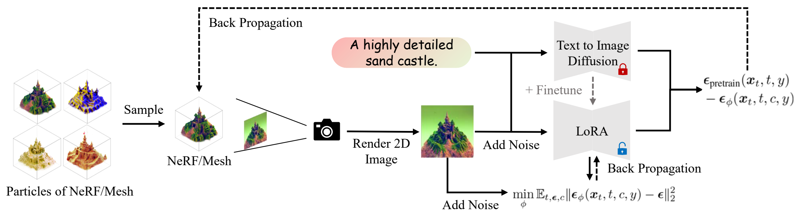
原文Figure 2：上方回传更新三维粒子，下方去噪训练更新LoRA；务必分别读两条更新路径。
DreamGaussianSDS · 3D Gaussian
- 输入
- 文本提示，或单张参考图像＋前景掩码；图像分支还使用相对相机条件
- 输出
- 先优化 3D Gaussians，再提取带 UV 纹理的网格
把物体想成一团可调整的彩色半透明小椭球：每个高斯都有位置、大小、朝向、颜色和不透明度。先从随机视角把这团高斯渲染成图片，再用 SDS 将扩散教师的反馈传回高斯参数，并逐步增加高斯数量。图像条件使用 Zero-1-to-3 XL，文本条件使用 Stable Diffusion。随后从高斯密度中提取网格，烘焙纹理，再细化 UV 纹理。
中文信息流 · 教学简化
- 文本／图像与随机高斯初始化
- 随机相机渲染＋加噪
- SDS 更新高斯并致密化
- 局部密度查询提取网格
- 多步去噪目标细化 UV 纹理
机制是 SDS，不是 VSD：这里没有用当前渲染训练 LoRA 辅助分布的 VSD 回路。末阶段改用多步去噪得到图像目标，再以 MSE 优化纹理，不应把整条管线都写成 SDS。
边界：SDS 生成的高斯可能模糊；改用 3DGS 并没有消除单视图背面歧义或保证精确表面。最终网格质量还依赖密度阈值、网格提取与纹理细化。
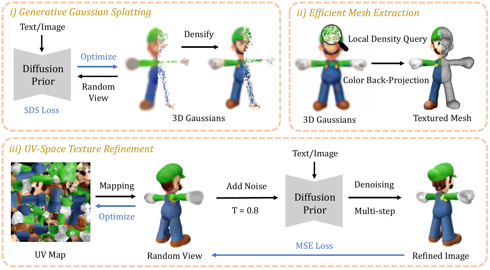
Figure 2，PDF 第 4 页：左上看 SDS 如何更新 3D Gaussians；右上是高斯到网格的转换；下方是 UV 纹理细化。蓝色 Optimize 箭头表示被更新的对象，三个阶段的优化目标并不相同。
GaussianDreamerSDS · 3D Gaussian
- 输入
- 文本提示；物体分支采用预训练 Shap-E 提供初始几何
- 输出
- 可直接进行 splatting 渲染的 3D Gaussians
先请三维生成模型提供一个粗略形状，再请二维扩散教师补细节。物体分支把 Shap-E 生成的粗网格转换为带颜色的点，经过带噪点生长和颜色扰动，用它们初始化高斯。随后把高斯渲染成二维图片，利用 SDS 更新高斯参数。三维先验主要用于初始化，二维先验负责后续优化。
中文信息流 · 教学简化
- 文本→三维先验生成粗形状
- 转换点云＋点生长／颜色扰动
- 初始化 3D Gaussians
- 二维扩散模型以 SDS 优化
- 直接 splatting 渲染
它使用 SDS，不需要 VSD 的 LoRA 辅助模型。原图还列出 text-to-motion 初始化分支；该分支会选取人体姿态并转为 SMPL，不能只凭这张框架图就判定输出为完整动态 4D。
边界：初始三维模型的几何错误会影响后续优化；二维教师仍可能带来多视图不一致。最终高斯可直接渲染，但不等于已获得闭合网格或可重新照明的 PBR 材质。
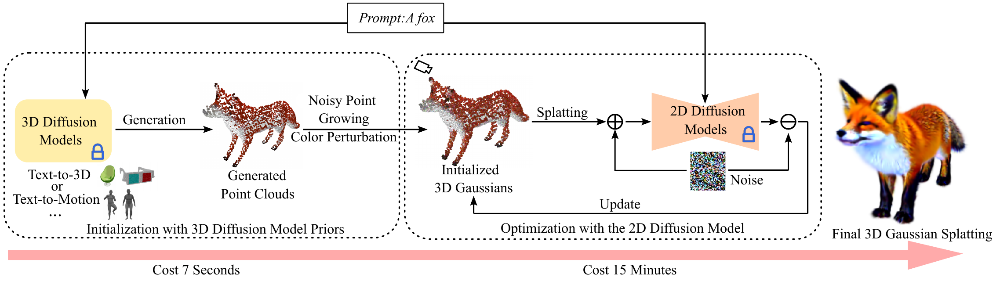
Figure 2，PDF 第 3 页：左半部分是三维先验初始化，右半部分才是二维教师指导的反复优化。图中的 7 秒和 15 分钟是作者报告；正文实验为单张 RTX 3090、1200 次优化、batch size 4，不能直接与其他硬件或协议下的数字比较。
GSGENSDS · 3D Gaussian
- 输入
- 文本提示；预训练 Point-E 提供点云初始化与三维先验
- 输出
- 显式 3D Gaussians，经过几何优化和外观细化
先用 Point-E 产生粗点云，只初始化高斯中心的位置；颜色随机初始化。几何阶段同时接受两种反馈：二维扩散模型看渲染图像，三维点云扩散模型看高斯中心的位置，从外观与空间结构两个方向约束高斯。然后进入外观阶段，主要使用二维指导，并通过紧凑性驱动的致密化补充高斯、丰富细节。
中文信息流 · 教学简化
- 文本→Point-E 点云初始化
- 几何阶段：二维 SDS＋三维 SDS
- 联合更新高斯形状与外观
- 外观阶段：二维指导＋致密化
- 输出可渲染高斯资产
与 GaussianDreamer 的主要区别：三维先验不只负责起点，还在几何优化阶段持续提供三维 SDS。这里的三维教师预测点云噪声，与 VSD 中学习当前渲染分布的 LoRA 辅助模型作用不同。
边界：三维点云先验能约束粗结构，但受预训练模型覆盖范围限制；二维细节指导仍不能保证正确材质或拓扑。高斯表示本身也不是网格连通关系。
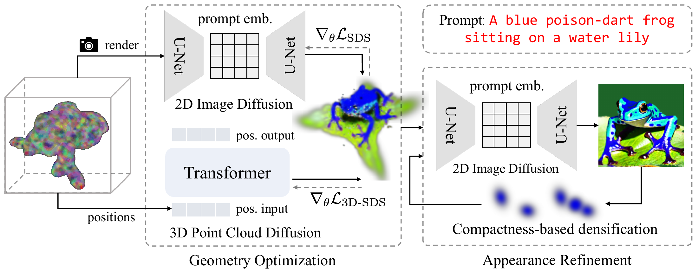
Figure 3，PDF 第 4 页：先读几何优化阶段的二维／三维指导，再读外观细化。三维 SDS 约束高斯中心所构成的点云；二维 SDS 经渲染器回传。不要把两位教师误读为 VSD 的教师与 LoRA 辅助模型。
MVDream多视图扩散
- 输入
- 文本和相机条件
- 输出
- 联合生成的多视图图像；再以多视图SDS优化三维表示
将同一对象的多个视角放进共同的扩散过程，通过跨视图注意力和相机条件交换信息。这个多视图模型还能作为三维优化的教师，让不同观察少一些冲突；它本身的直接输出仍是图像。
中文信息流 · 教学简化
- 文本与相机条件
- 联合多视图扩散
- 作为多视图SDS教师
- 优化共享三维对象
flow概括其三维生成用法；所选原图则展示多视图教师训练，二者阶段不同，界面中应标明。
边界：多视图统计一致性不是严格几何证明，合成数据和固定视角布局仍带来偏差。
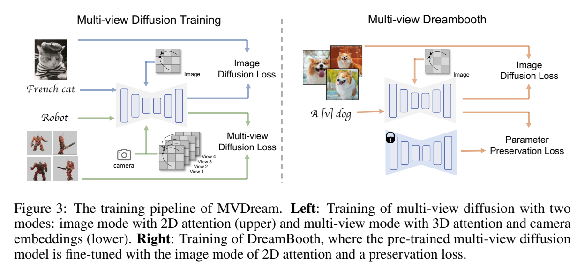
原文Figure 3展示训练而非完整三维推理：左侧混合二维与多视图训练，右侧为DreamBooth适配。
Wonder3D多视图扩散
- 输入
- 单张参考图像
- 输出
- 多视图颜色与法线 → 融合网格
从一张图片共同生成多个视角的颜色图和法线图，让不同视角以及两种信号互相交换信息。法线说明表面的局部朝向，随后与颜色一起用于几何融合；它们仍是模型预测，并非额外拍到的真实观测。
中文信息流 · 教学简化
- 单图条件编码
- 多视图颜色与法线扩散
- 跨视图与跨域交互
- 几何感知融合为网格
边界：若生成法线与颜色互相矛盾或遗漏遮挡区域，融合仍可能抹平细节或产生缺口。
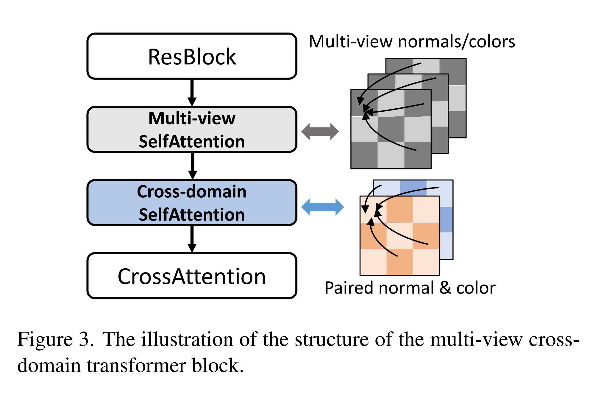
原文Figure 3仅展开多视图跨域Transformer块，不是包含最终法线融合的完整管线。
LRM前馈重建 / LRM
- 输入
- 单张图像与相机信息
- 输出
- 三平面特征支撑的神经辐射场
先在大量对象上训练共享的重建网络，再把新图的视觉特征与相机信息转成三平面表示。查询三平面可以得到空间中的密度和颜色，用于渲染新视角；单个对象不再从随机网络开始长期优化。
中文信息流 · 教学简化
- 图像与相机信息
- 视觉特征编码
- 三平面解码
- 查询密度与颜色
- 体渲染新视角
边界：模型可能补出可信却不真实的背面，相机假设不准也会导致形变。
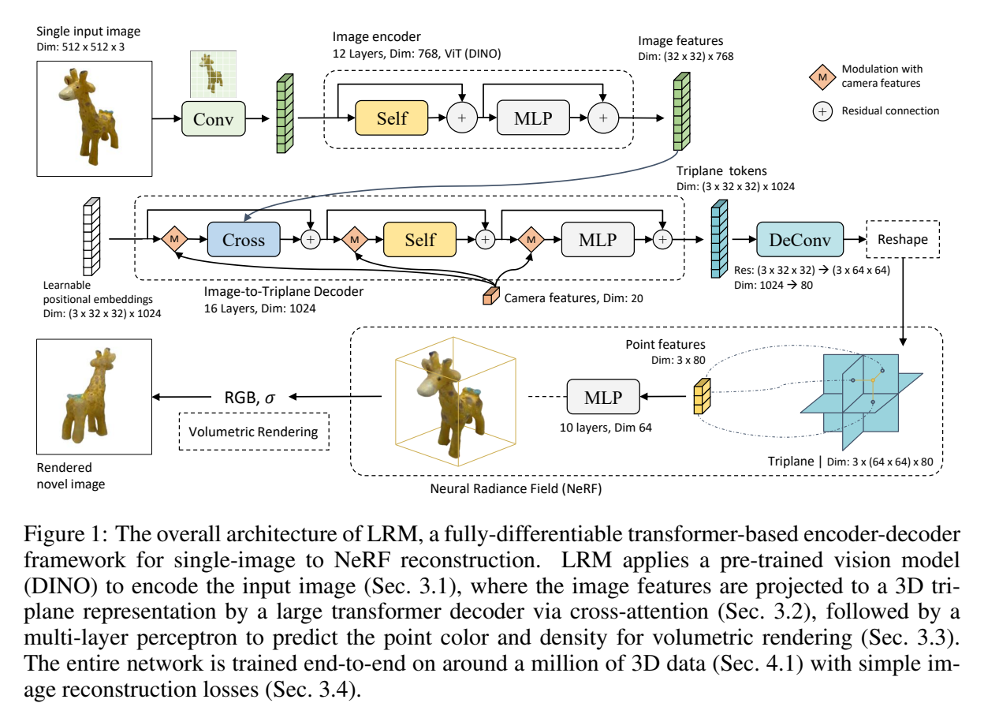
原文Figure 1包含视觉编码、相机调制、三平面与NeRF体渲染；它不是直接输出人工拓扑网格的网络。
InstantMesh前馈重建 / LRM
- 输入
- 单张参考图像；前端生成六视图
- 输出
- 三平面 → FlexiCubes可微表面 → 纹理网格
先由单图生成六个视角，再用共享重建网络预测三平面，经过可微表面提取得到网格。训练时外观和几何损失可以穿过网格环节回传，因此学习目标更直接面向最终表面，而非只优化神经渲染。
中文信息流 · 教学简化
- 单图生成六视图
- 稀疏视图共享重建
- 预测三平面
- 可微提取网格
- 输出纹理网格
上方为推理流程；论文原图最右侧的外观／几何渲染损失用于训练重建网络。
边界：有限网格分辨率会损失细节，生成视图中的矛盾也不会因使用网格而自动消失。
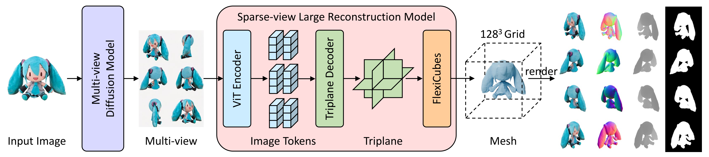
原文Figure 2：六视图、三平面与FlexiCubes；最右侧是训练用渲染通道，不是方法排名。
ATT3D摊销蒸馏
- 输入
- 文本提示
- 输出
- 条件神经场
不为每条提示单独从头优化对象，而是在训练时让共享网络处理许多提示，并接受扩散教师的指导。训练完成后，新提示经网络前馈得到神经场；节省的是每次请求的迭代，并没有省掉离线训练成本。
中文信息流 · 教学简化
- 训练提示集合
- 共享条件网络生成神经场
- 渲染并接收教师指导
- 更新共享网络
- 推理阶段文本前馈生成
前四步属于共享网络的离线训练；最后一步才是新提示的推理。
边界：未见提示和复杂组合的泛化受训练提示分布影响，前馈速度不代表无限开放域能力。
此处提供依据论文整理的中文框架，尚未收录该论文的原图。
CLAY原生 3D 生成
- 输入
- 文本；可选图像、体素、包围盒、点云等控制接口
- 输出
- 多分辨率三维几何潜变量；几何与材质资产
先把三维资产压缩成能保留形状的潜变量，再训练条件扩散模型生成这种三维编码，并解码出几何。材质另有生成模块，图像或结构信息可接入控制接口；各接口并不意味着每次都同时输入。
中文信息流 · 教学简化
- 离线学习三维几何编码
- 条件控制潜空间扩散
- 解码生成几何
- 材质生成形成资产
几何编码器先离线训练；推理时在其潜空间中生成，再解码几何并生成材质。
边界：数据清洗与编码压缩可能改变细薄结构和复杂拓扑，模型规模本身不能保证所有细节正确。
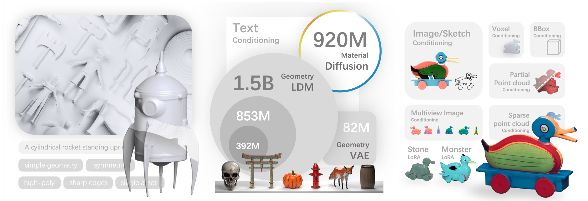
原文Figure 2是几何/材质模型与条件接口的系统概览，混有生成示例；不是逐层网络架构，也不作性能证据。
TRELLIS原生 3D 生成
- 输入
- 文本或单张图像（分别的条件生成设置）
- 输出
- 稀疏结构化潜表示SLAT；可解码高斯、辐射场或网格
先决定三维空间中哪些位置承载内容，再生成这些位置的局部潜特征，把形状与外观组织在同一稀疏表示里。不同解码器可以得到高斯、辐射场或网格；这些输出共享表示，但不是无损的文件格式转换。
中文信息流 · 教学简化
- 文字或图像条件
- 生成稀疏空间结构
- 流模型生成局部潜特征
- 选择解码器
- 得到高斯／场／网格
边界：不同解码器的表面与外观表现不同，局部潜变量也不自动保证编辑只影响局部。
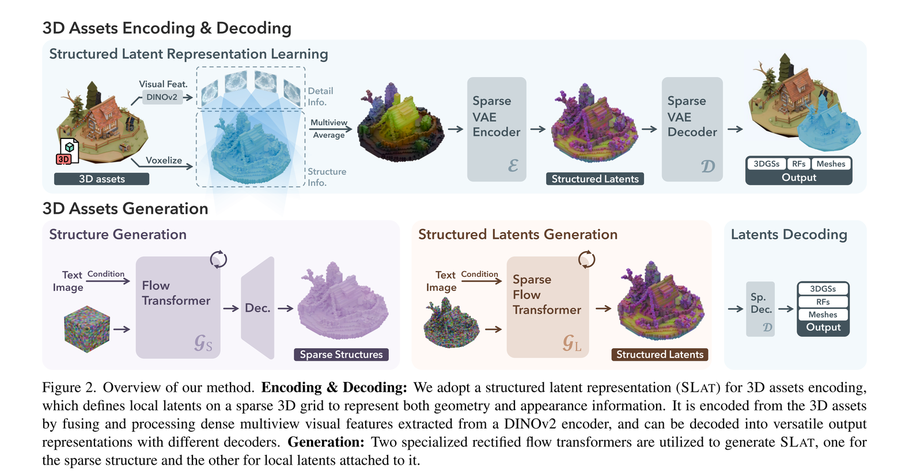
原文Figure 2上半部是资产编码/解码训练，下半部是两阶段流生成；必须分开训练和采样理解。
TripoSG原生 3D 生成
- 输入
- 单张图像；图像经DINO与CLIP编码
- 输出
- SDF几何潜变量 → 无纹理网格
用带符号距离等监督训练形状编码器，再让图像条件流模型从噪声生成几何潜变量，最后解码出表面。图中两类视觉特征帮助对齐输入与形状；它聚焦无纹理几何，材质需要额外的处理环节。
中文信息流 · 教学简化
- 图像双视觉特征编码
- 噪声几何潜变量
- 条件流模型采样
- 解码带符号距离场
- 提取无纹理网格
边界：预处理中的水密化和内部结构删除会改变目标形状，精细表面也不等于正确内部拓扑。
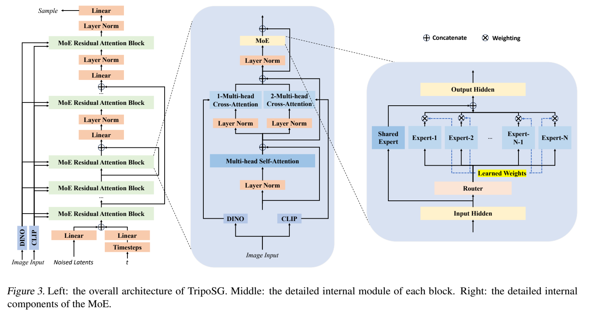
原文Figure 3展开图像条件生成网络、交叉注意力和MoE；不包含完整SDF VAE训练管线，不能把各规模变体混为一个模型。
GATOR原生 3D 生成 · 图像条件流模型＋Agent 精修
- 输入
- 一张或多张 RGB 观测；每视图还需目标掩码、相机内参／位姿及深度（可由图像估计），深度反投影为 pointmap；另有类别名或对象描述等语义条件
- 输出
- 稀疏结构 → 几何潜变量与 PBR 材质潜变量 → 带材质的完整物体网格及场景相对位姿；再由 Agent 局部精修
先让三维生成模型补出物体，再让会使用 Blender 的 Agent 有针对性地修整。GATOR 在 TRELLIS.2 的结构—几何—外观级联中加入多模态融合：把同一图像小块的 RGB、目标掩码和点图特征放在一起交换信息，再汇集不同视角。结构阶段保留周围场景以判断遮挡；几何与材质阶段把去除背景的图像特征投影到已生成的三维位置，保留观察到的细节。类别名与描述提供语义先验。生成资产随后成为 Agent 的起点，用于补缺失部件、修孔洞与拓扑、改 UV 或材质。
中文信息流 · 教学简化
- RGB＋目标掩码＋相机与深度／点图
- 同一 patch 的模态混合，再跨视图聚合
- 类别语义引导结构流，生成稀疏三维位置
- 投影图像特征＋描述引导几何流与材质流
- 解码带材质物体并细化平移与尺度
- Agent 局部编辑 → 同条件渲染检查 → 保留或撤销
流模型在三维潜空间中从噪声逐步生成结构、几何与外观；这是原生三维生成的共享模型采样，不是 SDS 教师经渲染器反传、不是 LRM 一次前馈，也不以 3D Gaussian 为主表示。Agent 精修是后续的编辑—渲染—检查循环，与前面流采样的步数分开。主评测中 Toys4K 和桌面物体通常输入四视图，ScanNet++ 输入一至十视图；LM-O／HB 使用传感器深度，HANDAL／ScanNet++ 使用估计深度与相机，不能把它们的条件混写成完全相同的纯 RGB 输入。
边界：依赖掩码和相机／深度估计；严重漏分割或错误深度仍会损害重建。不可见表面是生成先验推断，不能视为真实观测。Agent 依赖私有模型，通常每物体增加最多十分钟；局部精修主要改善外观与结构细节，在 HANDAL 上仍略微恶化部分平均几何指标。类别名／VLM 描述作为辅助语义条件，不代表已经验证任意用户文字与图像冲突时的独立联合控制。
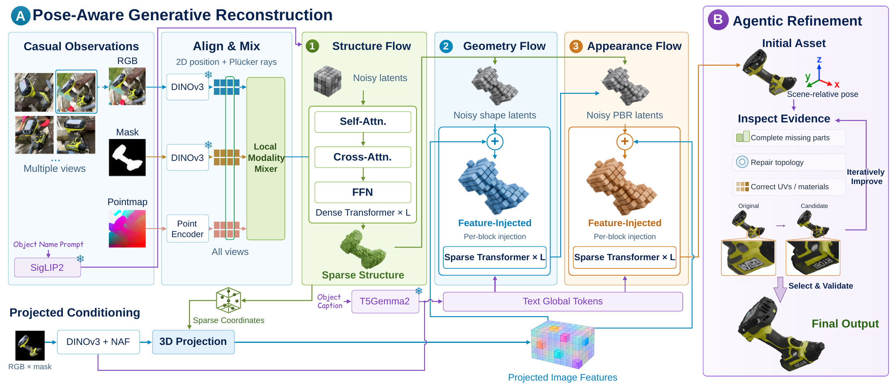
Figure 2：先看左侧 A 的 RGB／Mask／Pointmap 与局部模态混合，再按 1→2→3 读结构流、几何流、外观流；紫色路径是文字条件，蓝色投影路径把观测特征送入几何和材质模型。右侧 B 才是 Agent 根据已有资产与输入图像进行编辑、渲染、比较并保留或撤销修改。两部分机制需分开理解。来源：Wu 等，GATOR，arXiv:2610.11215v1，PDF 第4页；直接裁剪原图。
Pixal3D近半年原生 3D 生成
交叉标签：观测对齐 · 图像条件
更新类别：半年内首次公开；阅读层级：原论文方法、实验/消融与限制相关页核读；非独立复现
- 输入
- 单张RGB；多视图模式另需相机位姿；场景管线还使用分割、补图与点图
- 输出
- 由稀疏SDF解码的、与参考视角对齐的几何网格；原论文重点是几何
把杯把在照片中的位置与三维生成位置明确联系起来。系统将多尺度DINO特征按相机反投影到三维体积，注入结构与潜变量生成阶段；全局DINO词元仍使用交叉注意力。原始几何骨干为Direct3D-S2；后续SUPRA-TEX采用的TRELLIS.2版Pixal3D*不是同一个版本。
中文信息流 · 教学简化
- 输入图像与相机
- 多尺度图像特征反投影到三维空间
- 在输入视角对齐的坐标中生成三维
- 解码几何与资产
反投影为三维位置提供像素对应线索，隐藏面仍由生成先验补全；相机与尺度条件必须保留。
边界：反投影对应相机射线，不能唯一决定深度；遮挡面仍由先验推断。分割、相机和补图错误会传播，原论文不直接证明PBR材质生成。
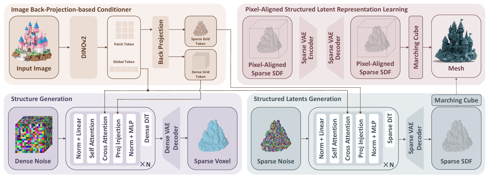
Pixal3D：显式图像射线对应与两阶段几何潜空间生成。保留图中全局token交叉注意力，反投影负责局部对应。来源：arXiv:2605.10922v1；直接裁剪原图。
PixGS近半年原生 3D 生成
交叉标签：3D Gaussian · 直接生成
更新类别：半年内首次公开；阅读层级：原论文方法、实验/消融与限制相关页核读；非独立复现
- 输入
- 文字经Qwen2.5编码；或参考图像与相机条件；图像有视图拼接与DINO适配两种方案
- 输出
- 四个256×256高斯网格；每像素12维含颜色、尺度、旋转、不透明度与深度
将生成器的输出从二维颜色像素改成高斯属性。流模型在这些属性上多步生成，再用深度和相机射线恢复三维位置并渲染。文字直接进入模型，不先转成一张图像；没有VAE潜空间解码。作者25步约1秒的结果限定单张A100，不是一次前馈，也不是SDS。
中文信息流 · 教学简化
- 文字编码或参考图像与相机射线
- 像素空间流模型多步采样
- 生成含深度的12维高斯属性
- 深度沿相机射线反投影为位置
- 属性转换并渲染三维高斯
直接生成的是高斯属性；多步采样仍是共享生成模型的推理，不是请二维教师反传更新当前物体的SDS。
边界：只面向物体；没有显式PBR和环境光分离，阴影或高光可能写入外观。直接生成高斯不保证网格拓扑、材质可编辑或场景泛化。
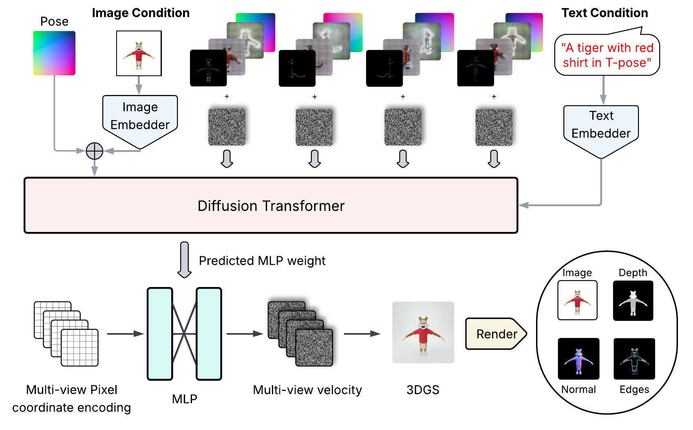
PixGS：条件编码→直接预测高斯属性更新方向→渲染监督。图中多视图网格储存的是高斯参数。来源：arXiv:2607.01803v2；直接裁剪原图。
Hunyuan3D-Buffalo 1.0原生 3D 生成
交叉标签：已有正文同步
更新类别：已有覆盖同步；阅读层级：Selected main-text method and/or experiment pages checked; NOT full-paper reading
- 输入
- 文字或三维等多模态条件，按理解、生成和编辑任务区分
- 输出
- 三维资产与理解响应
共享多模态理解骨干连接三维生成分支。VLM负责理解条件与部件语义，连接器把隐藏状态送到生成器；生成阶段仍由三维DiT完成。87M是多任务样本统计，不是87M个唯一三维物体。
中文信息流 · 教学简化
- 文字或三维观测进入共享VLM
- 理解与部件推理
- 连接器将隐藏状态传给3D DiT
- 生成或编辑三维资产
正文已有，本轮同步导图；阅读深度沿用已核查的原始页段。
边界：技术报告与任务/数据统计；不能等同独立复现或所有能力可靠；数据教师非最终推理架构
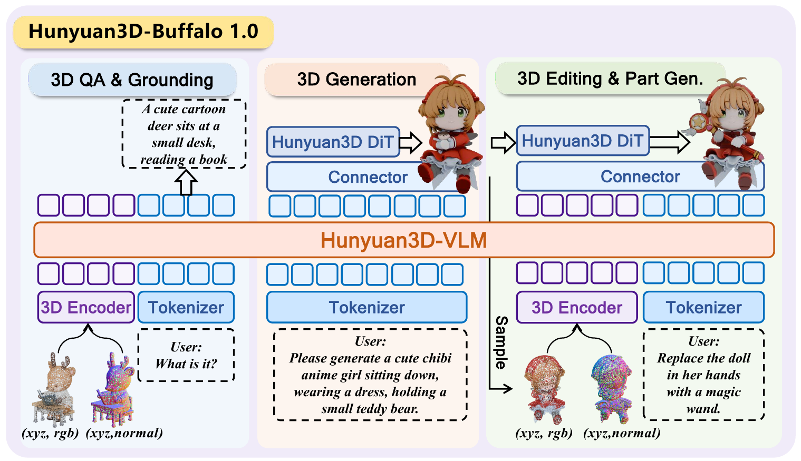
Figure 6，原文PDF第14页；直接裁剪。
TRELLIS.2原生 3D 生成
交叉标签：已有正文同步
更新类别：已有覆盖同步；阅读层级：Selected main-text method and/or experiment pages checked; NOT full-paper reading
- 输入
- 参考图像
- 输出
- 几何/PBR O-Voxel
O-Voxel在稀疏网格上保存局部表面与材质属性，稀疏压缩VAE形成紧凑结构化潜空间，流模型在其中生成资产。它与原TRELLIS单独列节点，材质通道不等于任何照片中的材质都已唯一恢复。
中文信息流 · 教学简化
- 三维资产与O-Voxel表示
- 稀疏压缩VAE学习紧凑潜变量
- 图像条件三维流采样
- 恢复几何与PBR属性
正文已有，本轮同步导图；阅读深度沿用已核查的原始页段。
边界：技术报告的自身设置，尚非独立统一复现；显式属性不等于真材质
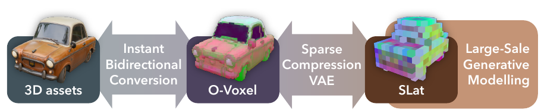
Figure 2，原文PDF第3页；直接裁剪。
原生 3D 生成 · 本期延伸阅读
- Block3D · 2026-08-20。块与块顺序生成，同一块内部同时去噪，并在块确定前修正低置信词元。（官方摘要及元数据核验；非全文精读）
- Position Forcing · 2026-10-07。从当前干净潜变量估计VecSet词元位置，随去噪进度逐步细化量化分辨率，再把位置编码送回DiT。（官方摘要及元数据核验；非全文精读）
- FILIGREE3D · 2026-09-28。利用空间约束和交替局部全局注意力控制高分辨率稀疏词元增长，融合多尺度图像特征，并以可见性感知正则补全几何。（官方摘要及元数据核验；非全文精读）
- OctLLM · 2026-10-01。用保留坐标和深度的稀疏八叉树占用词元承载三维，通过独立可训练分支接入冻结视觉语言骨干，共享自注意力。（官方摘要及元数据核验；非全文精读）
- CG-MLLM · 2026-01-29。TokenAR与BlockAR分工处理标准词元和三维潜变量块，将描述与生成放入多模态框架。（官方摘要及元数据核验；非全文精读）
MeshGPT网格自回归
- 输入
- 无条件网格生成或已有几何token上下文；非任意文本/图像条件系统
- 输出
- 离散几何token → 三角面序列
先从训练网格学习离散的几何词表，再让自回归网络逐步预测词表序列，并解码成三角面。它直接学习网格组织方式，可作为资产生成的基础组件；原始工作不能被当成完整的开放文本到三维系统。
中文信息流 · 教学简化
- 离线：网格局部几何编码
- 残差量化学习词表
- 采样：自回归预测几何词
- 解码三角面网格
前两项概括词表训练，后两项概括序列生成；原图只支持词表/量化模块说明。
边界：量化误差、面数预算与序列长度限制表达能力，生成三角面并不保证全部拓扑合法。
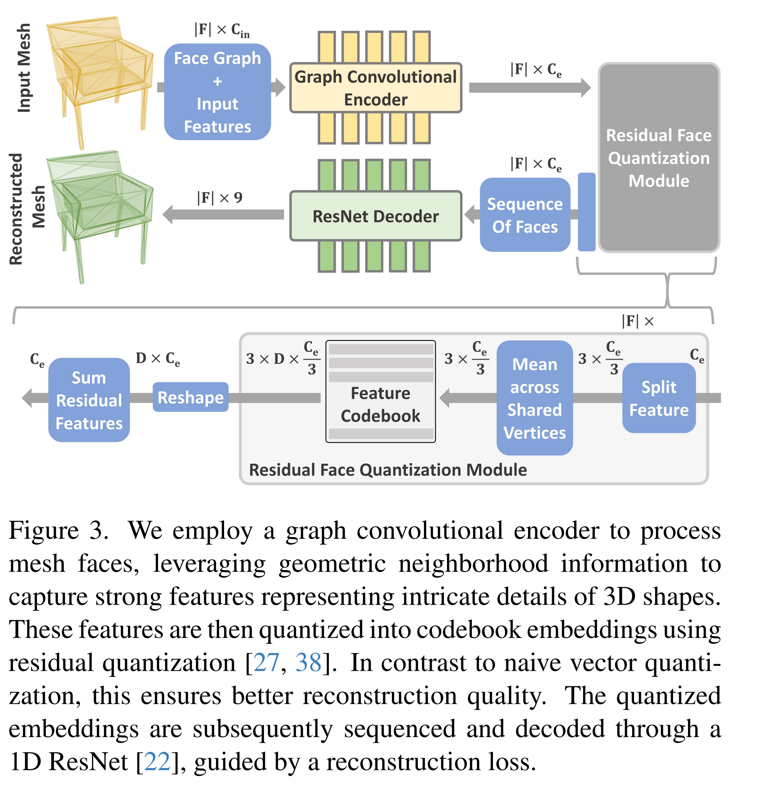
原文Figure 3是几何词表自编码与残差面量化模块；它不展示完整自回归Transformer，更不是文本到网格管线。
Fantasia3D几何与材质分工
- 输入
- 文本提示
- 输出
- 可微表面网格与空间变化BRDF材质参数
先以法线和轮廓等形状信号优化几何，再在已有表面上优化基色、粗糙度等材质参数。分阶段设计减少颜色补偿形状错误的机会，让输出能够接受新的光照，而不是只在展示视角看起来像照片。
中文信息流 · 教学简化
- 文本与初始表面
- 法线与轮廓指导几何
- 渲染指导材质优化
- 输出带材质网格
边界：材质参数与光照的解释仍有歧义，支持重新照明不等于测得了真实材料。
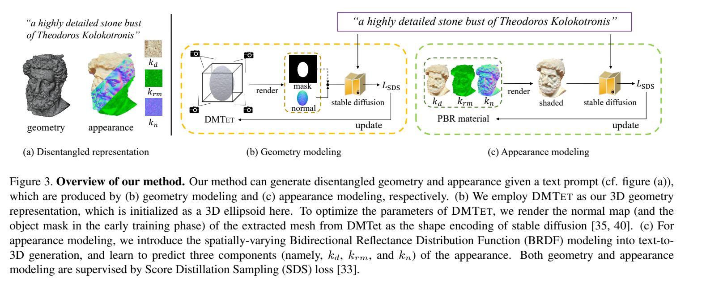
原文Figure 3分开几何建模与外观建模；两者都用扩散指导，图中参数是可渲染材质，不是真值测量。
Meta 3D AssetGen几何与材质分工
- 输入
- 文本提示；通过生成多视图进入重建器
- 输出
- 三平面SDF → 网格与PBR贴图
先生成同一对象的带光照视图和基色视图，再由三维重建器预测形状与材料，最后细化贴图。分开两种图像有助于避免把阴影直接画进基色；整个流程连接多视图生成、重建和资产后处理。
中文信息流 · 教学简化
- 文本生成双类多视图
- 三平面重建
- 预测距离场与材质
- 提取网格并投影纹理
- 细化PBR贴图
边界：不可见材质仍需推断，内部材质评测数据也限制了外部完全复现实验。
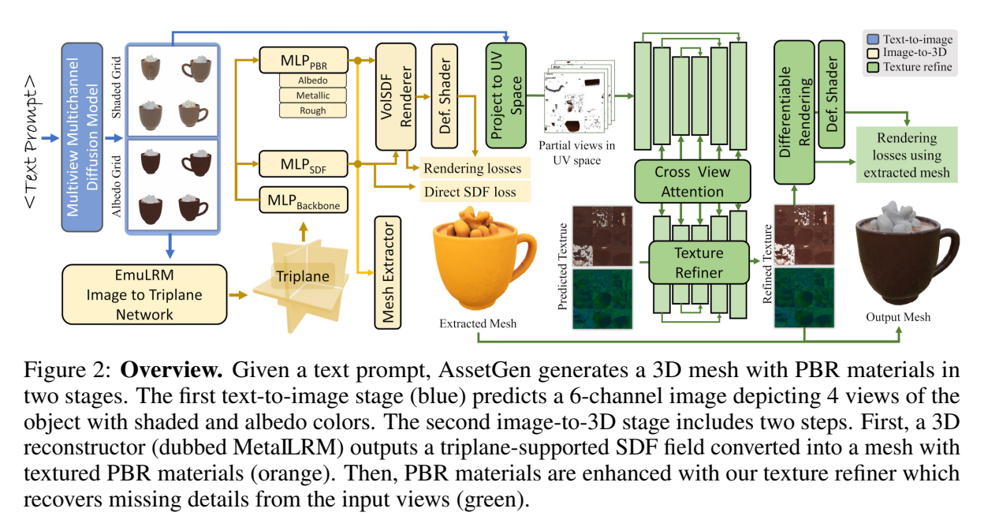
原文Figure 2包含带光照/基色视图、三平面SDF、材质分支和纹理细化；不同颜色标注不同阶段。
Hunyuan3D 2.1几何与材质分工
- 输入
- 单张图像；材质阶段还接收生成几何的法线等条件
- 输出
- SDF解码网格与基色、金属度、粗糙度贴图
先从图像生成几何，再结合参考图与几何条件生成基色、金属度和粗糙度等材质通道。材质网络在不同视角间交换信息，并利用多光照训练约束，让材料与当前照明尽量分开表达。
中文信息流 · 教学简化
- 图像条件形状流生成
- 解码距离场并提取网格
- 几何条件进入材质模型
- 多视图材质预测
- 输出PBR资产
边界：报告中的生产可用定位不等于所有拓扑与引擎接口均已验证，单图材料分解也仍然多解。
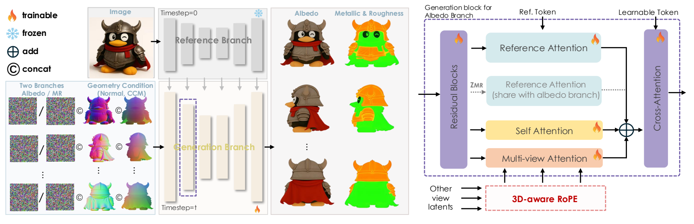
原文Figure 4只展示材质生成架构：参考分支、几何条件、多视图注意力及材质输出；不包括前置形状流模型。
SUPRA-TEX近半年几何与材质分工
交叉标签：PBR材质 · 观测保持
更新类别：半年内首次公开；阅读层级：原论文方法、实验/消融与限制相关页核读；非独立复现
- 输入
- 给定网格、相机投影和参考图，或由上游预测几何与相机；商业比较另加合成背图
- 输出
- 覆盖完整表面的可重光照PBR材质
先估计参考视角中光照分离的材质图，再投影到可见表面，用材质VAE编码成与生成目标同空间的观测潜变量。交替流模型把观测当作只读记忆，补全未见区域并协调完整表面；只读不保证最终材质值严格等于观测。
中文信息流 · 教学简化
- 给定网格与参考图
- 估计光照分离的可见PBR图
- 投影并编码为原生观测潜变量
- 固定只读锚点并交替流补全
- 解码完整可重光照材质
核心是给定几何后的材质生成；隐藏几何不是这一模块直接恢复的对象。商业比较中的合成背面图等额外条件另见正文证据。
边界：材质模块以几何为条件，不能把它写成独立恢复所有隐藏几何。可见材质估计和相机对齐错误也会成为锚点错误；比较时须分开单图与商业双视图条件。
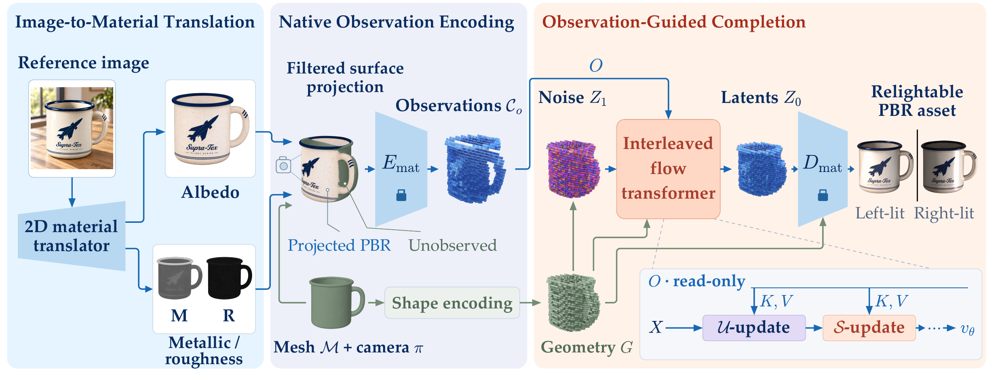
SUPRA-Tex：先估计图像PBR，投影为三维观测，再保持只读观测并补全全表面材质。来源：arXiv:2610.22352v1；直接裁剪原图。
几何与材质分工 · 本期延伸阅读
- Luce · 2026-08-25。以不同高斯通道表达反照率、金属度粗糙度和表面法向，经统一VAE和图像条件rectified flow生成可重光照资产。（官方摘要及元数据核验；非全文精读）
PartGen部件生成与补全
- 输入
- 文本、单张图像或已有三维对象（三种任务入口）
- 输出
- 多个可分别处理的三维部件及其组合
先获得对象的多个视角并保持部件分割一致，再根据整体上下文补全每个部件的不可见部分，最后分别重建成三维。这样可以单独处理帽子、轮子等组成单位，但还没有自动得到真实机械连接。
中文信息流 · 教学简化
- 获得对象多视图
- 跨视图部件分割
- 结合整体上下文补全
- 逐部件三维重建
- 组合可分离部件
边界：语义部件不天然包含关节、运动轴或接触约束，遮挡补全仍可能偏离真实结构。
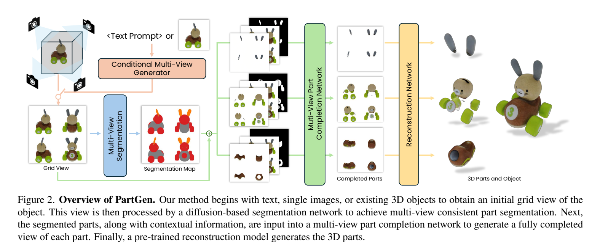
原文Figure 2完整流程：多视图、分割、部件补全、独立重建；右侧分开显示是部件输出，不等于机械运动验证。
CubePart近半年部件生成与补全
交叉标签：语义部件 · 联合生成
更新类别：半年内首次公开；阅读层级：原论文方法、实验/消融与限制相关页核读；非独立复现
- 输入
- 全局文本与开放词汇部件名称清单；第二阶段也可接已有水密网格与清单
- 输出
- 每个清单项对应一个可分离部件网格
先生成完整物体，再将整体结构交给多部件生成器。不同部件在生成过程中通过交叉注意力交换上下文，避免各自生成后尺寸和位置对不上。部件槽告诉系统想要什么零件，整体网格为它们提供形状参照。
中文信息流 · 教学简化
- 全局文字与部件方案
- 先生成完整对象网格
- 以整体为条件进行多部件生成
- 跨部件注意力交换上下文
- 解码各部件并构成对象
语义部件共同建模不保证所有连接都正确，更不自动提供蒙皮或机械关节。
边界：仍会发生部件交叠、左右混淆或连接错误；语义分离不自动提供关节、蒙皮和功能有效性。
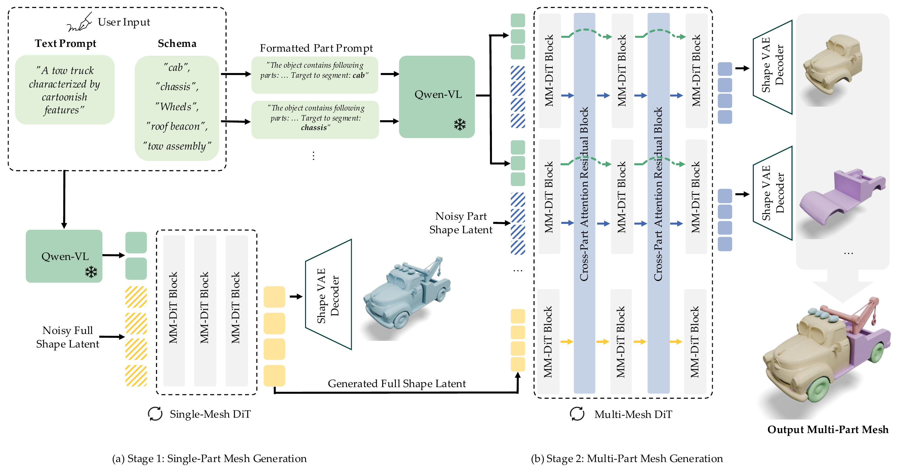
CubePart：先产生完整形状，再以部件清单和跨部件注意力生成多个独立网格。来源：arXiv:2605.28763v1；直接裁剪原图。
部件生成与补全 · 本期延伸阅读
- SCULPT · 2026-08-13。从完整物体的三维潜变量出发，每一步联合去噪产生一个取出的部件及剩余物体，迭代形成组合。（官方摘要及元数据核验；非全文精读）
- MegaParts · 2026-08-14。用适应部件复杂度的VQ形状词元压缩几何，LLM联合输出物体盒、部件盒及部件形状序列。（官方摘要及元数据核验；非全文精读）
- Seg3DParts · 2026-09-29。把图像分割作为部件身份及空间分配的显式条件，利用部件间交互在共享规范空间产生对齐部件网格。（官方摘要及元数据核验；非全文精读）
LATO.2近半年原生网格扩散与流
交叉标签：显式拓扑 · 网格流模型
更新类别：半年内首次公开；阅读层级：原论文方法、实验/消融与限制相关页核读；非独立复现
- 输入
- 图像特征或点云/体素条件、粗结构与顶点预算；部件扩展另用部件盒与规划器
- 输出
- 顶点、顶点对连接与从环恢复的网格面；不生成UV或材质
把“点在哪里”和“哪些点相连”分成两个生成问题。顶点VAE与顶点流先产生位置，拓扑VAE与连接流在实际生成的顶点上建模连接关系，共用粗体素支架。它是因子化流模型，不是MeshGPT式三角形序列自回归。
中文信息流 · 教学简化
- 条件输入与共享体素支架
- 顶点流先生成顶点
- 连接流在已生成顶点上建模
- 解码边与面形成网格
不是按三角形顺序逐个预测的自回归模型。图像应用与点云条件定量协议分列；拓扑阶段不能任意纠正顶点误差。
边界：顶点错误限制后续拓扑；连接解码随顶点对数增长。主要定量表采用点云条件，不能用作单图条件的统一排名。
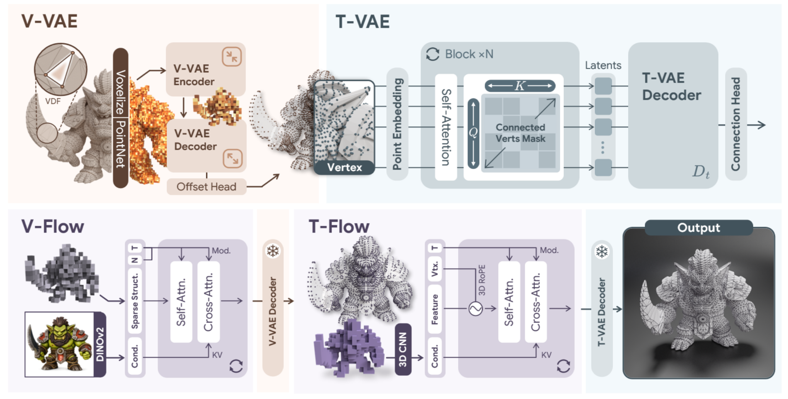
LATO.2：上方学习两种表示，下方先采样顶点再采样连接；顶点数与连接生成分别控制。来源：arXiv:2607.10623v2；直接裁剪原图。
原生网格扩散与流 · 本期延伸阅读
SpaceFlow近半年局部空间控制
交叉标签：局部控制 · 图文条件 · 免重训
更新类别：半年内首次公开；阅读层级：原论文方法、实验/消融与限制相关页核读；非独立复现
- 输入
- 文字、几何原语及区域强度；外观可用局部文字或参考图像
- 输出
- 受局部空间要求引导的三维资产；控制区域不自动成为独立网格
让用户用盒、球等几何原语标出“这里要有杯把”，并分别设置区域几何约束强弱。模型将局部区域与部件特征匹配，把对应文字或图像路由到局部生成过程。免重训指不重新训练骨干权重，外观阶段仍优化中间潜变量。
中文信息流 · 教学简化
- 文字与几何原语定义区域
- 局部区域匹配
- 路由局部文字或参考图像条件
- 按区域强度引导三维采样
空间控制区域不等于独立部件网格。免重训不表示免采样或零计算；控制忠实度与纹理细节可能存在取舍。
边界：区域匹配可能错位，控制过强可能牺牲纹理细节或全局协调；论文中条件忠实度和纹理细节存在取舍。
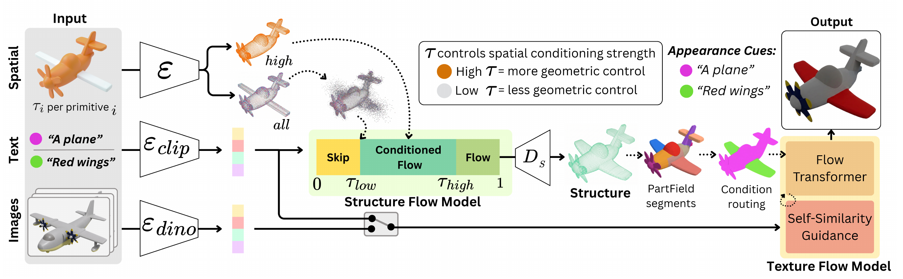
SpaceFlow：局部几何约束控制结构流，区域匹配后路由局部文字或图片外观条件。来源：arXiv:2610.12399v1；直接裁剪原图。
局部空间控制 · 本期延伸阅读
Artisan近半年程序与物理资产
交叉标签：单物体任务 · Agent · 程序生成 · 场景程序交叉 · 物理资产
更新类别：半年内首次公开；阅读层级：原论文方法、实验/消融与限制相关页核读；非独立复现
- 输入
- 任务描述与可选参考图、程序工具及仿真环境
- 输出
- 带部件、关节、质量、材质与任务标注的单个可交互资产
Design Agent规划部件与连接，Coding Agent写并执行参数化资产程序，Review Agent检查渲染、部件和物理报告。MuJoCo提供碰撞、稳定性反馈，代码再被修订。主任务是物体资产；本章与场景程序方法比较共同的工具闭环。
中文信息流 · 教学简化
- 任务描述与资产要求
- Design Agent规划部件与连接
- Coding Agent写资产程序
- Review Agent执行与检查
- MuJoCo反馈后修订并导出
程序、质量、摩擦与关节等参数为资产接口提供可检查结构；仿真通过的结论受测试初态、求解器与材料模型范围限制。
边界：有限状态仿真通过不能证明所有连续运动或真实材料都正确。多轮模型调用、重试与仿真都属于生成预算，程序可执行与功能正确仍需分别判断。
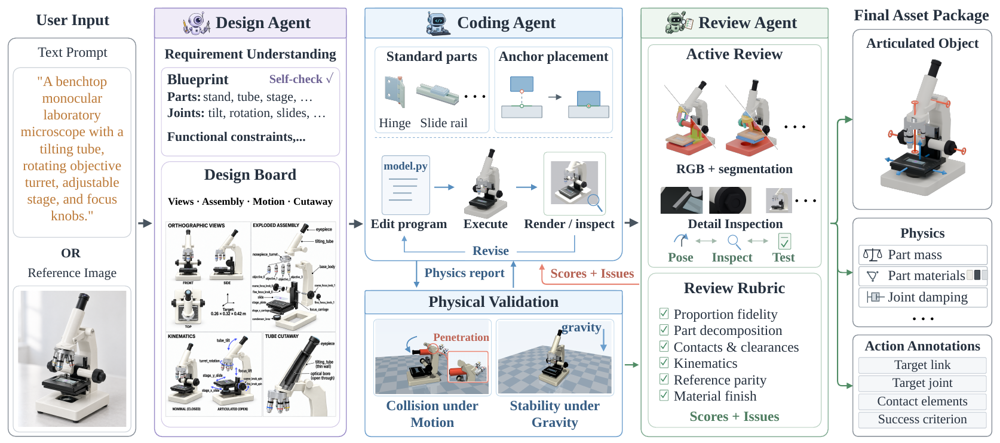
Design规划，Coding执行程序，Review结合渲染与物理报告检查；红色反馈路径表示修复循环。来源：arXiv:2610.13947v3, 2026-10-16；直接裁剪原图。
程序与物理资产 · 本期延伸阅读
- USDCraft · 2026-10-08。将残缺源网格转成区分已观测表面和未知空间的度量文本，LLM反复编写检查程序，输出带关节及物理属性的USD资产。（官方摘要及元数据核验；非全文精读）
场景生成 · 论文与框架
生成、重建与资产组合可在同一系统中协作
Text2Room逐视角补全
- 输入
- 文本提示与逐步选择的相机视角
- 输出
- 带纹理的显式三角网格
像一边走进房间一边搭建模型：已有网格保存看过的部分，新视角中的空白交给图像模型补绘，再用深度估计把像素变回表面。它把二维生成接成可持续扩展的三维场景。
中文信息流 · 教学简化
- 文本与相机视角
- 已有网格重投影与补绘
- 深度预测及对齐
- 网格融合
- 补全视角循环
边界：深度误差可能累积成破洞或拉伸；覆盖范围依赖相机路径，不能由展示图推出完整封闭几何或物体级可编辑性。
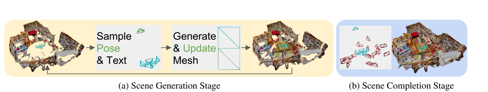
原文Fig.2展示生成与补全两个阶段及循环，可解释重投影—补绘—网格更新；不是单纯效果对比图。
Holodeck语言与程序组合
- 输入
- 自然语言场景需求
- 输出
- 房间结构、检索到的物体网格及空间变换
把一句房间描述拆成墙面、门窗、家具和摆放规则。语言模型负责提出候选意图，几何求解器把物体放进空间；读图时要区分资产从哪里来，以及摆放是否满足约束。
中文信息流 · 教学简化
- 语言需求
- 房间与门窗规划
- 物体描述及资产检索
- 空间约束求解
- 可交互环境
边界：依赖已有资产库和关系约束的正确性；并非全部物体从零生成，也不能仅凭布局成功推断完整物理合理性。
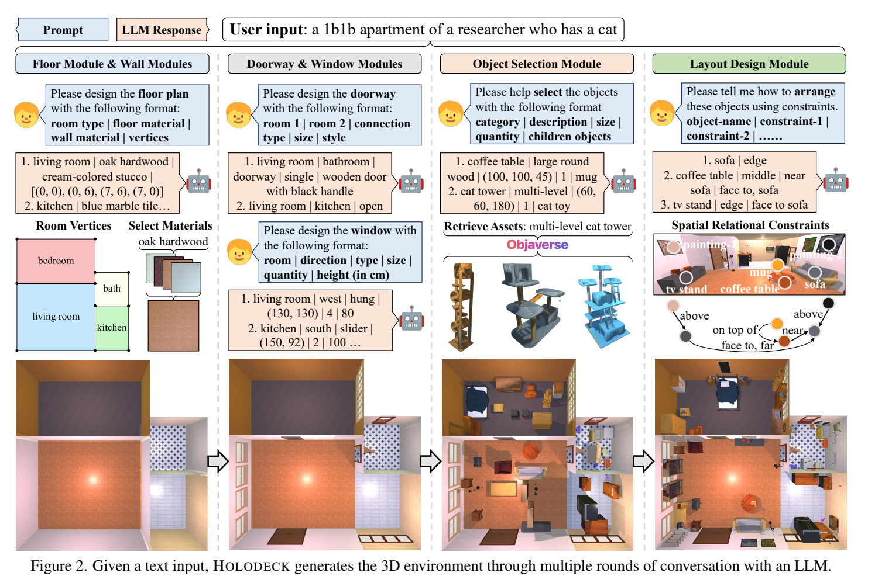
原文Fig.2按房间、门窗、物体选择、布局约束组织模块，含语言交互与中间场景示例。
Scene Language语言与程序组合
- 输入
- 文字或图像描述，经场景语言表示组织
- 输出
- 程序、词语与神经嵌入共同描述的结构化场景
把场景写成能执行的说明书：程序决定有几个物体、如何排列，词语说明物体是什么，嵌入补足外观。这样可以显式修改数量与结构，并通过适配接口接入不同渲染器。
中文信息流 · 教学简化
- 场景语言：程序、词语、嵌入
- 执行并展开实体
- 渲染器重参数化
- 场景渲染
边界：表示结构清楚不等于已经获得完整可靠的几何资产；具体能力取决于生成表示和渲染后端，不能视为通用世界编译器。
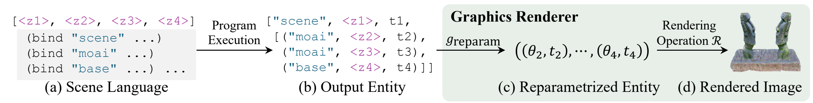
原文Fig.3展示场景语言到实体、渲染参数和图像的接口，不是完整神经网络训练架构。
LEGO-Anything语言与程序组合 · Agent / Image-to-Code
- 输入
- 单张 RGB 参考图像；基准另提供图像尺寸、水平视场和输出规范等公开元数据
- 输出
- 可执行 Blender 场景程序，以及构建的几何、材质、布局与相机；提交 .blend、.glb 和渲染图
把三维重建交给一个会看图和写建模脚本的编码智能体。它根据参考图像编写 Blender 程序，执行后检查场景与渲染结果，再修改代码，循环改善物体形状、摆放、相机和外观。最后保留能继续编辑、执行和查询的场景程序，而不是只输出一张看起来像三维的图片。
中文信息流 · 教学简化
- 读参考图像与任务规范
- 编写／修改 Blender 场景代码
- 执行代码并渲染
- 对照参考图像检查结果
- 再次修改或保留当前版本
- 导出可执行场景与三维资产
这是逐实例的代码—执行—检查循环。本文的主要生成机制不是 SDS 梯度优化，也不是一次前馈直接预测三维。配套 LEGO-Plugin 用更好的初始化、参考图像约束的细化和版本控制改善循环；该插件不额外训练模型。这里的“语言与程序”指方法机制，主要输入仍是图像，不应仅因 Agent 内部使用语言而标为独立图文联合条件。
边界：单张图像不能确定所有遮挡几何。论文观察到初始化不准、后续修改破坏已有结果、自我评价不可靠；程序可运行与几何、外观准确应分别评估。其主要几何评测针对参考视角可见表面，不能直接解释为完整背面也已恢复。
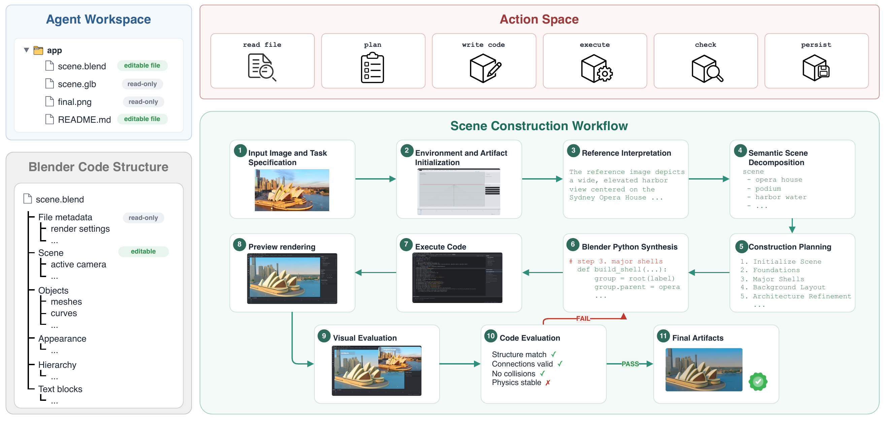
Figure 2：依次阅读工作空间、可用动作、Blender 代码结构和场景构建工作流。图中 Agent 通过写代码、执行、渲染与检查推动场景修改；它不是把图像特征直接解码成网格的网络架构。该图由作者从一次 Agent 轨迹抽象得到，中文步骤为教学概括。来源：Li 等，LEGO-Anything，arXiv:2609.36380v1。
语言与程序组合 · 本期延伸阅读
- LabBuilder · 2026-05-04。将文本实验说明转成结构化协议，结合资产及化学知识构造布局，并检查几何、安全与通行要求。（官方摘要及元数据核验；非全文精读）
MIDI多实例联合扩散
- 输入
- 单张场景图像、物体区域及掩码等局部条件
- 输出
- 多个物体的三维潜表示与可分离三维实例
不是把场景压成一整块模型，而是为多个物体保留独立三维潜变量。各物体一边读取自己的图像区域，一边通过注意力交流，从而兼顾实例外观和场景关系，便于后续分离编辑。
中文信息流 · 教学简化
- 场景图像与实例条件
- 各物体带噪潜变量
- 共享DiT及多实例注意力
- 三维解码
- 可分离物体场景
边界：重遮挡、小物体和复杂相互作用仍困难；看不见的几何是条件推断，不能当作由单张图片观测到的真实结构。
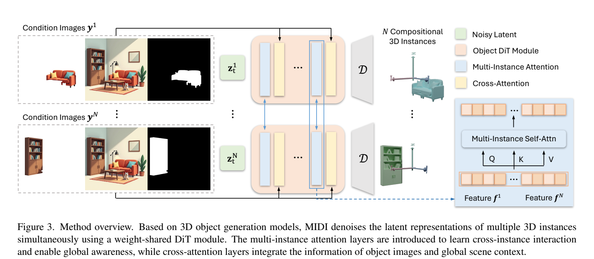
原文Fig.3保留局部与全局图像条件、共享DiT、多实例及交叉注意力模块，可追踪联合去噪的信息流。
WorldGen世界生成系统
- 输入
- 文本世界描述与规划产生的结构条件
- 输出
- 场景几何、物体资产及其组合关系
先规划人能走到哪里，再把场景重建、物体分解和细节增强串起来。它让世界生成从展示一幅景观走向可探索空间；读图时要分清规划、重建和资产加工各自解决的问题。
中文信息流 · 教学简化
- 文本与场景规划
- 场景重建
- 物体分解
- 资产增强
- 可探索三维世界
边界：系统针对有界场景，复杂多层结构与实例复用仍受限；端到端展示不代表每个模块和训练数据均可独立复现。
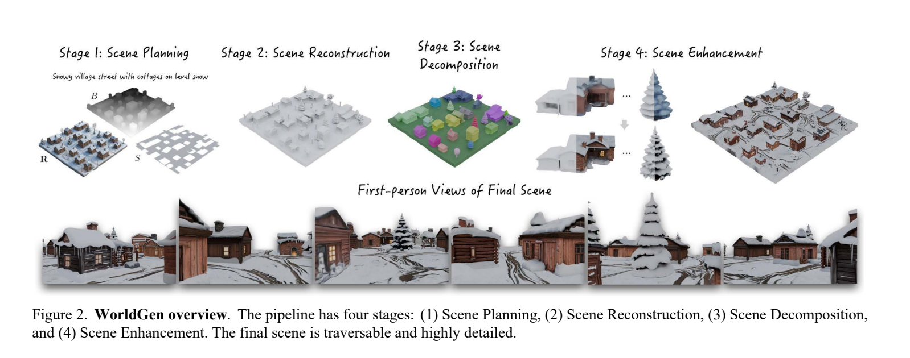
原文Fig.2展示四阶段系统及第一人称视图示例，适合说明模块关系，不是逐层网络结构图。
世界生成系统 · 本期延伸阅读
- EmbodiedGen V2 · 2026-07-08。把可仿真资产、交互功能、任务、多房间和状态化代码编辑连接成可执行环境，并用于具身策略训练。（官方摘要及元数据核验；非全文精读）
- Pano2World · 2026-07-01。全景图先形成粗高斯代理，渲染附近视点作几何指导，多目标全景联合去噪，再经潜特征适配器得到持久3DGS场景。（官方摘要及元数据核验；非全文精读）
SceneMosaic近半年布局演化与反馈
交叉标签：Agent · 布局 · 物理检查
更新类别：半年内首次公开；阅读层级：原论文方法、实验/消融与限制相关页核读；非独立复现
- 输入
- 图像；文字模式先生成场景图像
- 输出
- 多个含物体资产与布局的房间级三维场景
先逐物体重建并推断支撑、包含关系，再做物理稳定化。Critic指出布局问题，Actor执行位置与旋转修改；按桌面、沙发等局部单元产生方案，再组合和筛选。主要演化的是布局，不是每轮重新生成所有对象几何。
中文信息流 · 教学简化
- 图像或文字转图像条件
- 生成对象资产与初始布局
- 物理稳定化
- Critic与Actor局部演化
- 保留多样场景候选
初始资产质量、反馈预算与布局优化贡献要分开；房间尺度的物理检查不能推出任意大场景均可用。
边界：限定单房间规模；初始分割、资产重建和关系推断错误会传播。仿真检查受工具与状态覆盖范围限制，多样布局不等于新几何多样性。
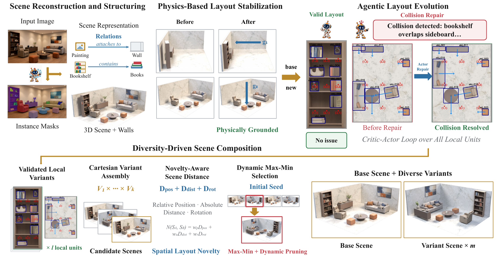
从物体重建、物理稳定化读到Critic–Actor布局修正，再看局部方案组合。来源：arXiv:2609.05594v1, 2026-09-04；直接裁剪原图。
人体与 Avatar · 论文与框架
形体、外观和可驱动性分开检查
TADA人体先验＋优化
- 输入
- 文本提示，以及优化时采样的姿态和表情
- 输出
- SMPL-X网格、细分顶点位移、UV纹理和模板蒙皮权重
先把角色保存在规范人体空间，再借助模板蒙皮变成不同姿态。优化时反复让角色换动作和表情，检查几何与纹理是否仍一致，因此目标不只是生成一张好看的正面人物图。
中文信息流 · 教学简化
- 文本与SMPL-X模板
- 规范空间位移及纹理
- 姿态、表情采样与蒙皮
- 随机视角下图像／法线指导
- 可驱动人体网格
边界：人体模板限制极端体型和拓扑；可驱动网格不等于真实布料动力学，生成纹理中的烘焙光照也不等于可重光照材质。
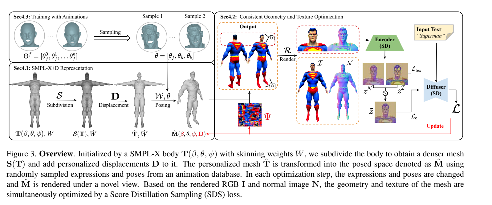
原文Fig.3包含SMPL-X加位移、动画采样、渲染与红色更新回路，能说明规范空间到姿态空间的关系。
HumanGaussian人体先验＋优化
- 输入
- 文本提示、SMPL-X初始化与姿态骨架条件
- 输出
- 人体表面初始化的三维高斯
先在人体模板表面撒下三维高斯，再同时检查渲染颜色与深度。骨架条件告诉模型人体的大致结构，两路指导分别约束外观与形状，最后清理漂浮高斯，减少只看颜色造成的错觉。
中文信息流 · 教学简化
- 文本、模板与姿态骨架
- 人体表面初始化高斯
- RGB及深度渲染
- 双分支SDS优化
- 高斯清理
边界：手足细节与漂浮伪影仍可能失败；高斯外观质量和模板初始化本身不能证明具备完整的蒙皮或稳定动画能力。
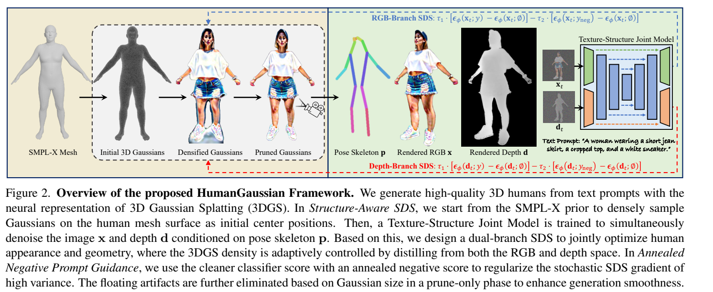
原文Fig.2明确展示骨架条件、RGB/深度两路、初始化与清理；没有把任意姿态驱动作为该图证明的能力。
SiTH单图生成式重建
- 输入
- 单张人体图像及估计的人体姿态、UV和轮廓条件
- 输出
- 人体先验辅助的隐式SDF与颜色场，输出纹理网格
单张照片没有拍到背面，SiTH先生成一个可能的背面，再把前后图像、法线和人体先验合起来重建网格。两阶段把补全与几何恢复分开，也提醒我们背面细节并不是原图的直接证据。
中文信息流 · 教学简化
- 单图与人体姿态估计
- UV、轮廓条件背面生成
- 前后图像及法线
- 人体先验辅助SDF与颜色查询
- 纹理网格
边界：人体姿态估计错误和不可见区域歧义会传播到网格；合理的背面不一定是真实背面，静态纹理网格也不自动具备动画绑定。
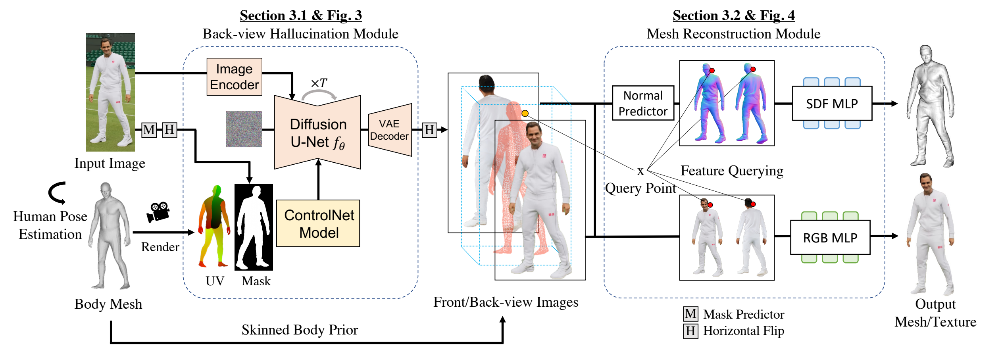
原文Fig.2保留输入、UV/Mask、背面生成、人体先验、SDF/RGB及图例，可直接解释条件来源与两阶段分工。
FiCA近半年单图生成式重建
交叉标签：头部Avatar · 前馈 · 3D Gaussian
更新类别：半年内首次公开；阅读层级：原论文方法、实验/消融与限制相关页核读；非独立复现
- 输入
- 单张肖像；生成后驱动另需表情、视线等信号
- 输出
- 网格对齐高斯头部Avatar，不是全身模型
先估计可见脸部与头发的UV和几何对应，把观测放到表面地图，再通过条件流补全几何与纹理。共享修正网络改善身份和对齐，Universal Prior Model结合身份与表情解码高斯。内部仍有50步流采样，前馈指免逐人优化。
中文信息流 · 教学简化
- 单张肖像
- 估计部分UV对应
- 扩散补全UV几何与纹理
- 前馈细化高斯头部
- 用表达条件驱动
面向头部而非全身；可驱动三维头部与只生成说话视频不是同一输出。
边界：强光照、模糊和分层配件仍困难；共享训练成本较大。可驱动头部不等于全身动态或物理衣物生成。
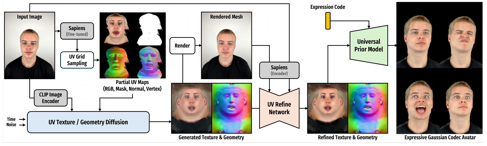
部分UV观测先补成完整几何与纹理，前馈修正后交给Universal Prior Model；Expression Code是动画时的额外条件。来源：arXiv:2606.24232v2, 2026-08-29；直接裁剪原图。
单图生成式重建 · 本期延伸阅读
- Forwardrobe · 2026-07-31。单图前馈构造规范空间的人体和独立衣服层，衣服具有蒙皮初始化、姿态条件非刚性形变和外观适配。（官方摘要及元数据核验；非全文精读）
TeRA人体潜表示生成
- 输入
- 文本生成条件；输出可由SMPL-X姿态参数驱动
- 输出
- 与SMPL-X对齐的UV高斯属性图及结构化潜空间
让人体表面在结构化图中拥有稳定位置，再在这个空间学习文本生成。离线蒸馏和扩散训练承担主要学习成本，推理时解码出高斯属性，借助人体参数驱动同一个角色变换姿态。
中文信息流 · 教学简化
- 离线数据与重建模型蒸馏
- 文本条件潜扩散
- 结构化潜图解码
- UV高斯属性采样
- 人体参数驱动与渲染
第一步是离线学习；后续为文本采样、解码及驱动。原图同时展示训练与生成。
边界：快速推理依赖离线数据和训练投入；静态训练数据难以表达运动衣褶，模板对宽松长裙等偏离身体表面的结构仍有限制。
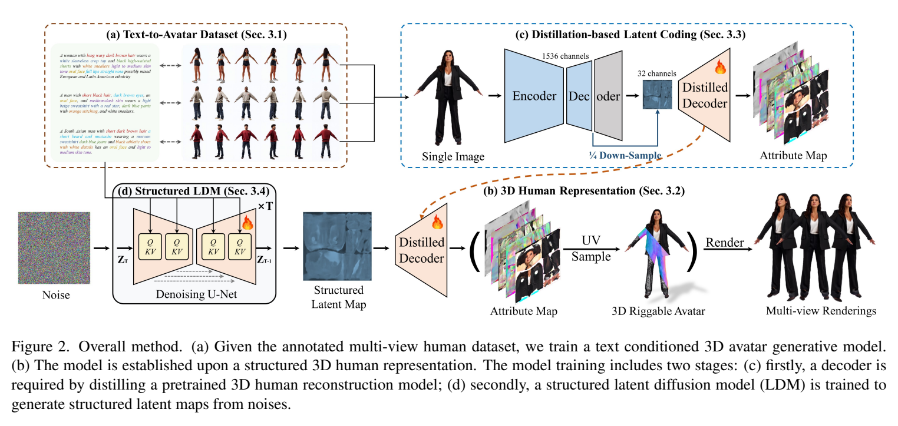
原文Fig.2分别展示数据、表示、蒸馏编码与结构化LDM；图中有多阶段训练，不能把全图当成单次推理顺序。
TGRHuman近半年多视图先验与全身资产
交叉标签：人体先验 · 多阶段生成 · 静态网格
更新类别：半年内首次公开；阅读层级：原论文方法、实验/消融与限制相关页核读；非独立复现
- 输入
- 文字以及给定SMPL形体和姿态
- 输出
- 带纹理的静态全身网格；后续可另行绑定动画
先生成四视图法线，再用这些几何证据雕刻网格。纹理阶段建立SMPL UV先验，ReferenceNet保存人物样貌，扩散渲染器生成更密视图，最后拟合UV纹理。法线约束与颜色约束分阶段处理。
中文信息流 · 教学简化
- 文字与SMPL姿态条件
- 多视图法线预测
- 几何雕刻
- 纹理先验与扩散渲染
- 输出带纹理全身网格
生成的主体是静态全身网格；另行绑定后的动画不能算作已生成真实4D。完整流程仍有显式优化。
边界：流程仍有显式逐资产优化；手指、头发和域外姿态会失败。动画展示由生成后绑定和运动重定向得到，不是文本直接生成真实4D。
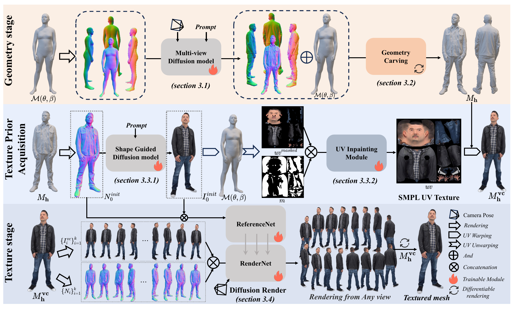
上排生成几何，中排建立SMPL UV纹理先验，下排用扩散渲染器形成密集观测；三排处理同一人体资产。来源：arXiv:2608.12175v1, 2026-08-12；直接裁剪原图。
动态 4D · 论文与框架
物体随时间变化 ≠ 相机环绕静态模型
4D-fy多先验蒸馏
- 输入
- 描述对象及动作的文本提示
- 输出
- 静态与动态多尺度哈希特征构成的四维辐射场
让不同老师各管一部分：三维感知图像先验帮助稳定多视图，普通图像先验改善外观，视频先验提供运动趋势。被优化的是随物理时间变化的辐射场，而不是简单的相机绕拍视频。
中文信息流 · 教学简化
- 文本与静态、动态哈希表示
- 指定相机和时间渲染
- 图像及视频先验指导
- 交替梯度更新
- 四维辐射场
边界：逐实例优化成本较高，复杂运动仍困难；多个先验提供的指导可能冲突，加入时间变量不代表自然满足物理规律。
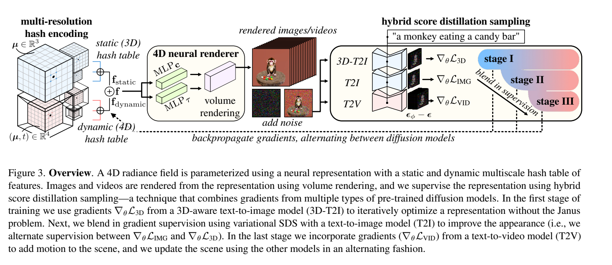
原文Fig.3左侧区分三维静态和四维动态哈希，右侧展示三种指导与交替反传回路。
Align4D近半年多先验蒸馏
交叉标签：时变3D Gaussian · 多模态 · 对齐
更新类别：半年内首次公开；阅读层级：原论文方法、实验/消融与限制相关页核读；非独立复现
- 输入
- 文字、图像等转换为视频与3D配对；配对通常由上游模型生成
- 输出
- 规范高斯及随时间变化的形变网络
视频提供什么时候运动，三维资产提供物体结构。先对齐视频与多视图监督中的距离和物体尺度，再联合运动、几何约束，交替优化高斯与形变。可以固定时间换视角，也可固定相机看时间变化。
中文信息流 · 教学简化
- 文字图像等条件构造视频与三维配对
- 视频与多视图距离对齐
- 运动和几何联合对齐
- 异步优化高斯与形变
- 输出随时间变化的三维
X4D中的生成数据不是实测动态三维真值；优化耗时与条件数据生成耗时要分开记录。
边界：X4D是上游模型生成的条件数据，不是实测完整4D真值；上游偏差会传播。作者优化计时不含条件数据生成，不与端到端耗时混比。
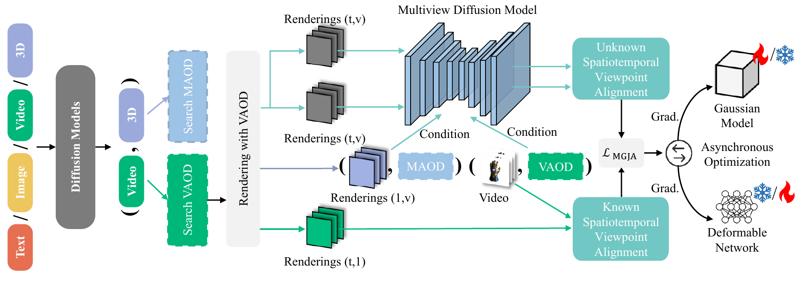
左侧把不同输入转换为视频与三维，中间对齐尺度及运动几何，右侧交替优化高斯和形变。来源：arXiv:2607.02516v1, 2026-07-02；直接裁剪原图。
多先验蒸馏 · 本期延伸阅读
- PhyGenHOI · 2026-05-28。输入已有静态人体和物体3DGS以及动作文本，以人体运动扩散、物体MPM及接触重模拟耦合，再用视频SDS修正接触视觉。（官方摘要及元数据核验；非全文精读）
DreamGaussian4D规范形状＋形变
- 输入
- 单张输入图像，进一步生成驱动视频
- 输出
- 规范三维高斯及随时间变化的位置、旋转和尺度形变
一张图像分成两条线：一条建立静态三维高斯，另一条生成动作视频。随后让规范高斯随时间变形，既追随参考视角中的动作，也接受其他视角的扩散指导，形成可换视角的动态对象。
中文信息流 · 教学简化
- 输入图像
- 静态高斯与驱动视频两路生成
- 时间条件形变
- 参考视角重建及随机视角SDS
- 动态高斯
边界：驱动视频不是实际观测的三维运动；遮挡、大形变和拓扑变化仍困难，后续网格或纹理处理也不自动保证逐顶点对应。
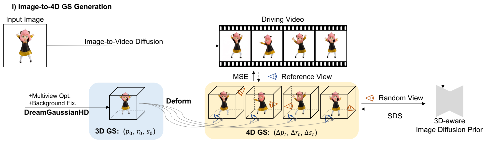
原文Fig.2上半部，只展示Image-to-4D GS Generation；不含后续网格纹理细化，不能称为完整系统图。
L4GM前馈时序重建
- 输入
- 单目视频与首帧生成的多视图图像；文本或单图应用需要上游视频生成
- 输出
- 逐时刻的三维高斯序列
把视频帧与首帧的多视图线索送进同一个重建网络，用跨视角注意力协调空间，用时间注意力协调动作。输出是一串三维高斯状态；它不要求所有运动都由一个规范形状的形变解释。
中文信息流 · 教学简化
- 单目视频与首帧多视图
- 跨视角及时间注意力
- 逐时刻高斯预测
- 时序插值
- 动态三维渲染
边界：依赖训练分布及上游多视图生成质量；网络推理时间不包含所有前处理，逐时刻高斯也不保证持久的点身份对应。
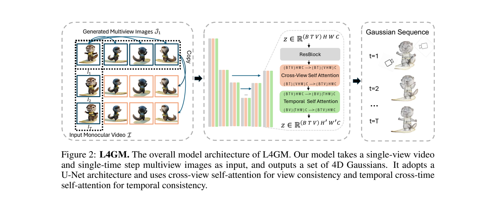
原文Fig.2包含输入视频、复制的首帧多视图、两种注意力与高斯序列；不把复制的多视图误作各时刻真实观测。
前馈时序重建 · 本期延伸阅读
- Full-4D · 2026-05-25。单视角视频条件生成同步时间×视角视频网格，再用流匹配蒸馏辅助优化显式4DGS。（官方摘要及元数据核验；非全文精读）
Sculpt4D原生三维时序生成
- 输入
- 视频或图像序列，作为逐帧图像条件
- 输出
- 三维形状潜变量序列，解码为动态网格序列
直接在三维形状潜空间里生成一段动态网格，而不是只生成二维运动画面。首帧锚点帮助保持对象身份，时间稀疏注意力交换运动信息；一致采样则减少训练时无关的跨帧抖动。
中文信息流 · 教学简化
- 图像序列条件
- 噪声三维潜变量序列
- 带时间注意力的条件去噪
- 形状潜变量解码
- 网格序列
上方为生成流程；论文图中的一致表面采样与编码属于训练数据处理。
边界：网格序列不自动等于共享拓扑、绑定完成的动画资产；统一对应及纹理传播仍需额外配准，图中表面编码涉及训练数据流程。
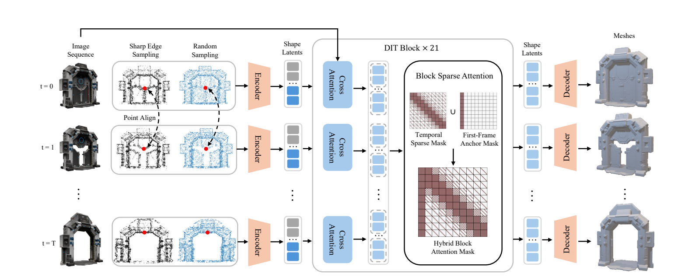
原文Fig.2展示一致采样、编码、图像交叉注意力、稀疏时空掩码和网格解码；采样编码部分不是要求用户输入三维网格。
图文联合 · 论文与框架
同一次生成同时使用独立文字和参考图像
SDFusion三维潜空间联合
- 输入
- 独立文字＋参考图像；所配补全实验额外给了部分形状。
- 输出
- 三维截断带符号距离场（T-SDF），再提取几何表面。
先把三维距离场压缩为潜变量，再让图像和文字共同引导去噪，分别调节模态权重。它展示了多条件形状控制，但所配结果还给了部分形状，不能据此宣称仅凭图文获得同等约束。
中文信息流 · 教学简化
- 图像与文本；补全任务另给部分形状
- CLIP 图像与 BERT 文本特征
- 三维潜变量扩散与按模态 CFG
- VQ-VAE 解码为 T-SDF
- 提取几何表面
边界：Figure 8 是带部分形状的联合定性结果；单任务表格不是统一图文冲突基准，指导权重也不是几何硬约束或条件满足保证。
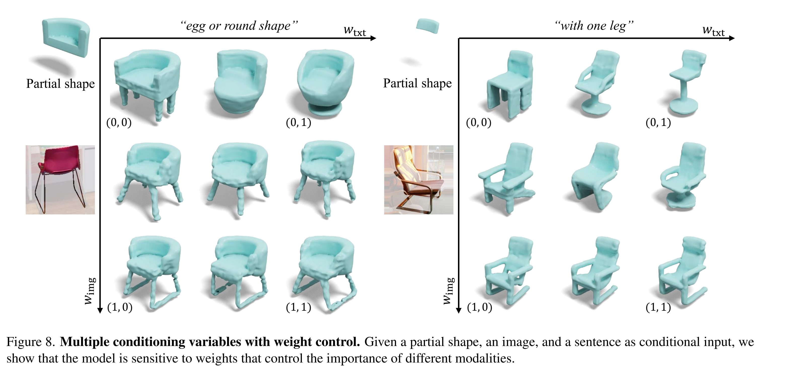
原论文 PDF 第8页 Figure 8：部分形状、图像、文本与指导权重网格；是结果图，不是架构图。
TIGON三维潜空间联合
- 输入
- 独立文字＋单张参考 RGB 图像；不要求用户提供初始三维网格。
- 输出
- UniLat3D 统一三维资产潜变量，经对应解码器得到 Mesh 或 3DGS。
图像分支和文本分支处理同一个三维潜变量，逐层交换特征，再平均速度预测推进采样。固定参考图改变文字的实验支持未见区域控制，但冲突案例仍可能偏向图像类别。
中文信息流 · 教学简化
- 参考图像与独立文本
- DINO 与 CLIP 条件编码
- 同一三维潜变量进入双 DiT 并交换特征
- 平均速度预测并迭代采样
- 统一潜变量解码为 Mesh 或 3DGS
边界：以 UniLat3D 潜空间和训练资产为基础；图文冲突时可偏向图像，不保证任意文字覆盖可见属性。交换特征后两路输出已非相互独立的单模态专家。
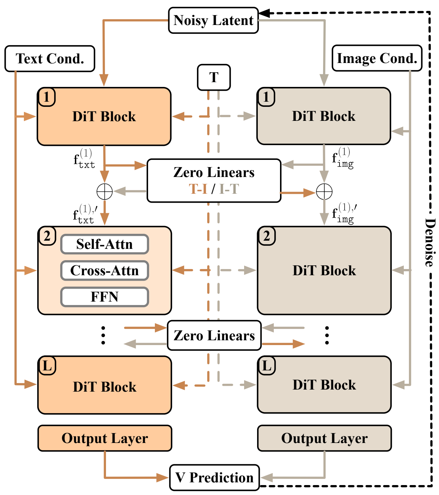
双 DiT 分支交换特征，平均速度预测；原图中央 T 表示去噪时间步。
IPDreamer逐对象联合优化
- 输入
- 文字＋一张或多张参考图；内部先获得粗三维。多图扩展另用定位词和掩码。
- 输出
- 逐步优化得到的纹理网格；粗阶段使用 NeRF。
先获得粗三维对象，再把文本与复杂图像提示共同送入二维扩散先验，通过可微渲染优化几何和纹理。它控制的是生成外观，并非严格扫描；参考图甚至可能压过文字要求的材料。
中文信息流 · 教学简化
- 文本、图像提示及内部粗三维初始化
- 估计法线并编码图像与文本条件
- 渲染粗网格并构造联合 IP-SDS 指导
- 逐步优化几何和纹理
- 输出可渲染纹理网格
边界：需要逐对象优化；生成初始化与已有网格编辑要分开。Figure 5 的铁胸甲案例受皮革图像提示支配，不能宣称文本对图像属性具有任意覆盖能力。
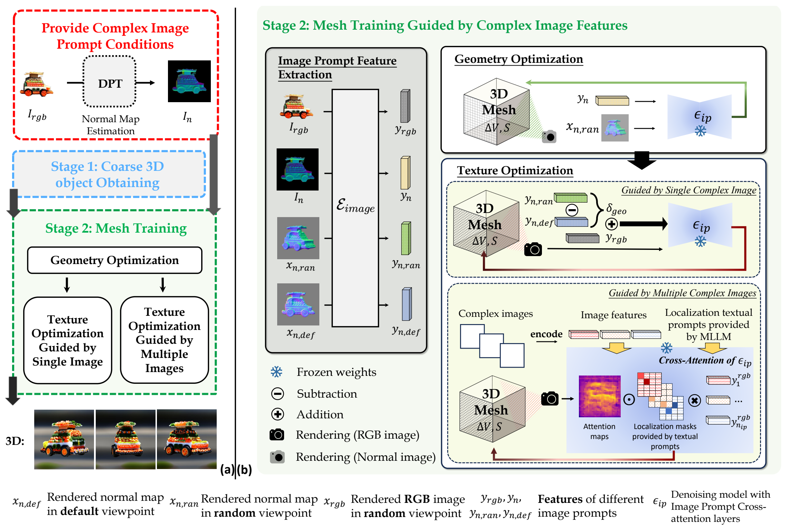
完整方法框架及单图／多图支路。整体文本同时进入噪声预测器的证据另见第 5 页式 (2)–(7)。
ImageDream联合多视图先验
- 输入
- 文字＋单张参考图；内部使用规范相机设定和采样视角。
- 输出
- 中间为多视图图像，最终通过蒸馏优化得到三维辐射场（NeRF）。
文本通路保留语义，参考图的局部特征和像素潜变量共同控制多视图扩散，再用该先验优化三维辐射场。接口确实同时接收图文，但主要实验采用相互匹配的条件，不能证明任意冲突都可解决。
中文信息流 · 教学简化
- 用户文本与参考图像
- 文字通路及局部/像素图像控制器
- 联合条件多视图扩散先验
- 多视图 score distillation 优化 NeRF
- 渲染所得三维辐射场
多视图图像是中间结果，后续还有逐对象 NeRF 优化。
边界：多视图图像本身不是三维资产；最终仍需 NeRF 优化。评测主要由对应文本生成参考图，独立冲突控制证据有限，强图像约束和相机失配也可能损害细节或几何。
此处提供依据论文整理的中文框架，尚未收录该论文的原图。
评测与验证 · 论文与框架
任务、生成机制与验证协议分别记录。
3DVerifierBench近半年要求满足与验证器
交叉标签：横向评测 · 多视图证据 · 验证可靠性
更新类别：半年内首次公开；阅读层级：原论文方法、实验/消融与限制相关页核读；非独立复现
- 输入
- 任务要求、候选三维、多视图证据与可选参考
- 输出
- 满足与否的判断、拒绝解释和反事实一致性评测
将整体“好不好”拆成具体事实，如杯把数量、部件绑定、材质或运动。基准检查模型是否答对、理由是否指出真实错误，以及只改要求或候选时能否一致响应。它横跨不同生成路线，属于验证研究。
中文信息流 · 教学简化
- 要求与候选三维资产
- 获取多视图证据
- 判断要求是否满足
- 解释拒绝原因与反事实变化
- 评估验证器可靠性
这是评测与验证工作。Oracle候选选择和人工指导递归修改提供潜力上界，不能写成自动Agent已经实现的能力。
边界：Oracle16候选选择和人工指导8输入的结果不是自动Agent能力；人工指导全部事实满足仍不等于全部结果无缺陷且保真。验证器自身也可能数错、绑定错或接受错误暗示。
每个任务框给出候选、要求、判断与解释；图示是验证任务设计，不是三维生成网络。来源：arXiv:2610.22360v1, 2026-10-15；直接裁剪原图。
要求满足与验证器 · 本期延伸阅读
- P3D-Bench · 2026-06-09。分别评测文本、图像和装配条件下的可执行参数程序，关注精确尺寸、几何、拓扑、语义和部件结构。（官方摘要及元数据核验；非全文精读）
- 3DCodeBench · 2026-05-31。评测VLM从文本或图像写三维建模代码，结合自动指标与成对人工偏好，分析API不匹配及可渲染但部件漂浮的失败。（官方摘要及元数据核验；非全文精读）